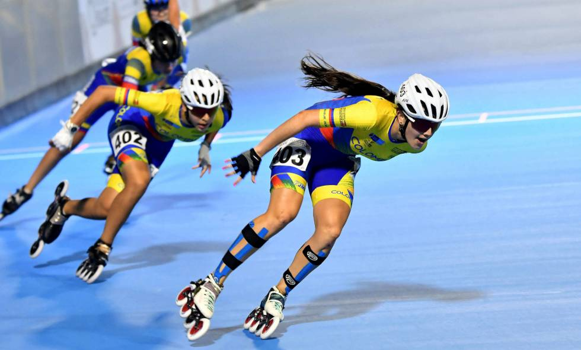

¿Qué es el patinaje?
El patinaje es un deporte que consiste en deslizarse sobre ruedas usando patines. Se puede practicar como recreación, ejercicio o competencia, y ayuda a mejorar el equilibrio, la resistencia y la coordinación.

Tipos de patines
- Patines en línea: ruedas alineadas, ideales para velocidad y recreación.
- Patines de cuatro ruedas (quad): dos ruedas delante y dos atrás, comunes en patinaje artístico y roller derby.
- Patines de velocidad: botas bajas y chasis largo para competir.
Consejos de seguridad
Presiona el botón para ver un consejo.
Más información
Conoce la federación internacional del deporte en World Skate.